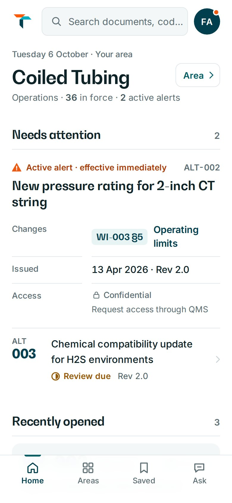
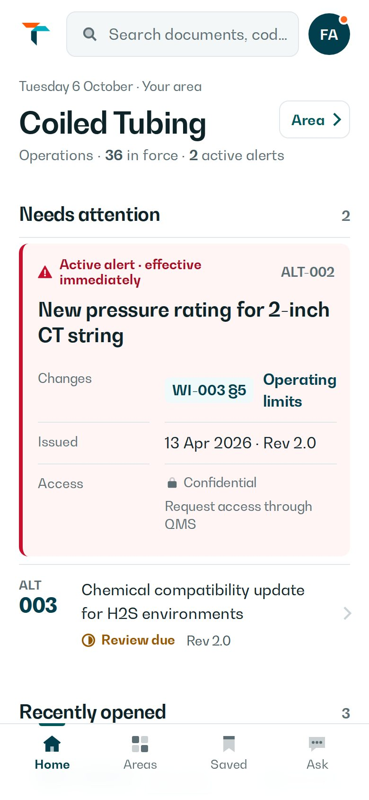
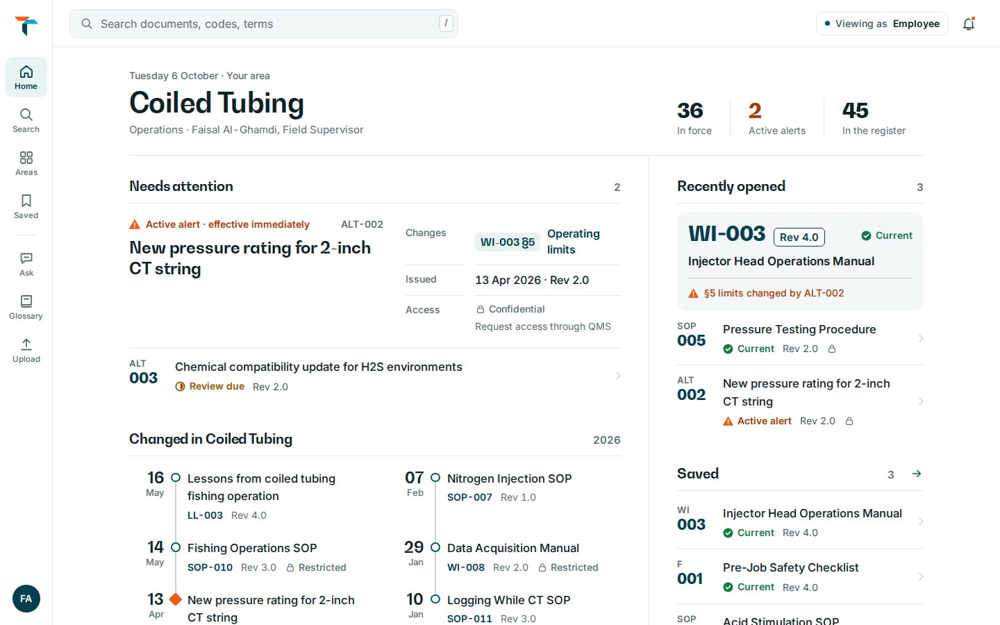
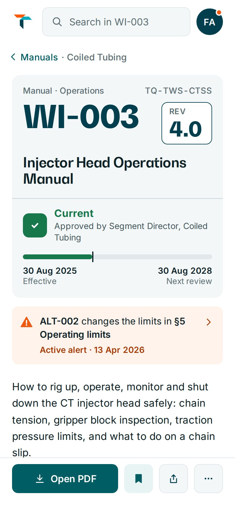
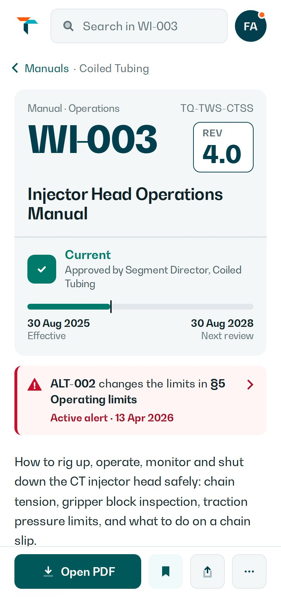
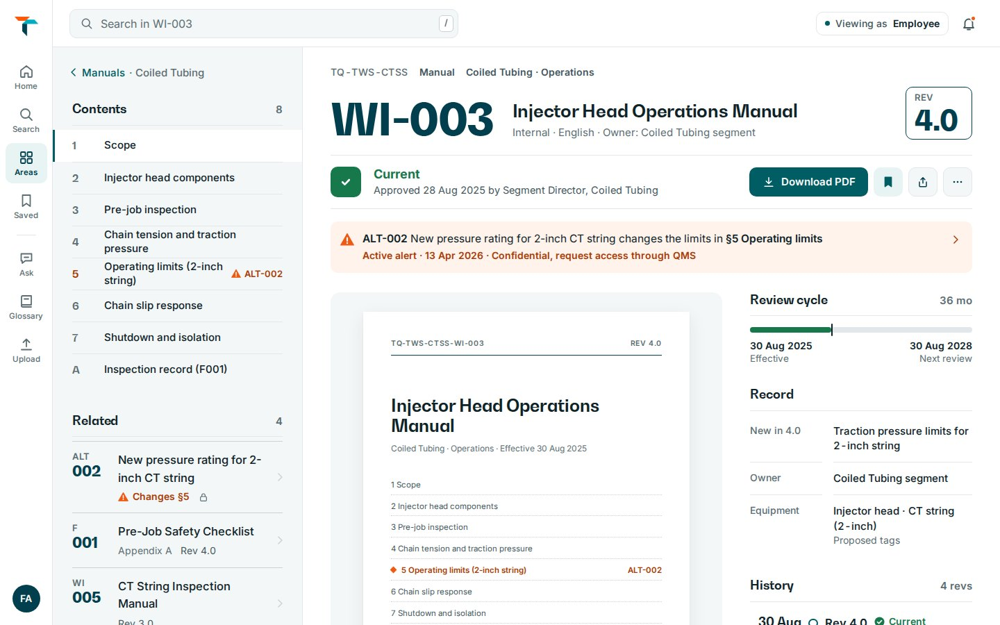
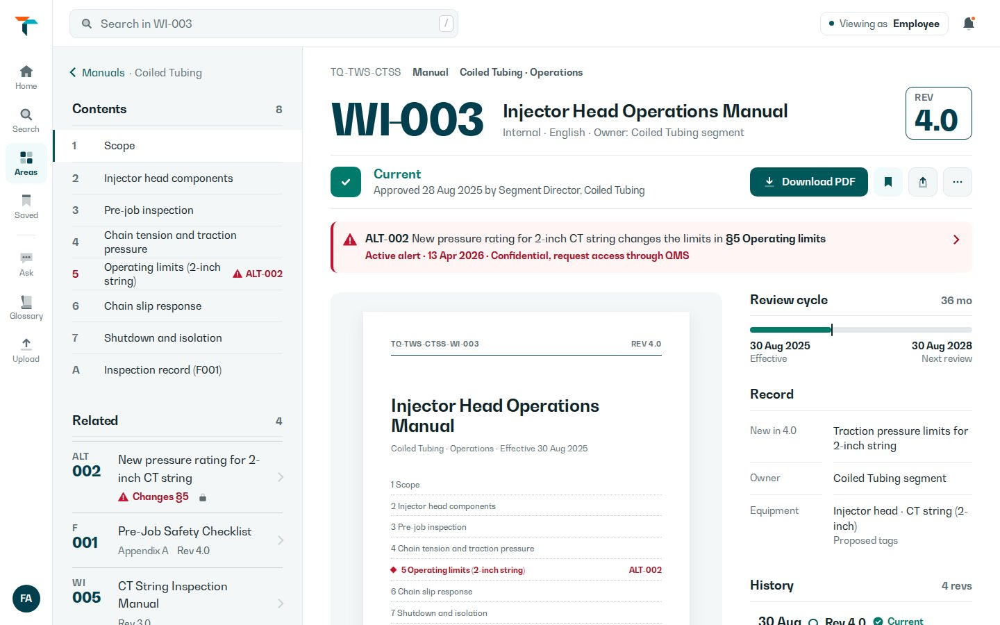
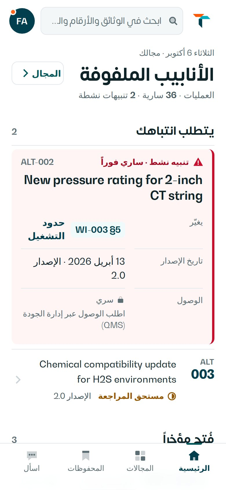
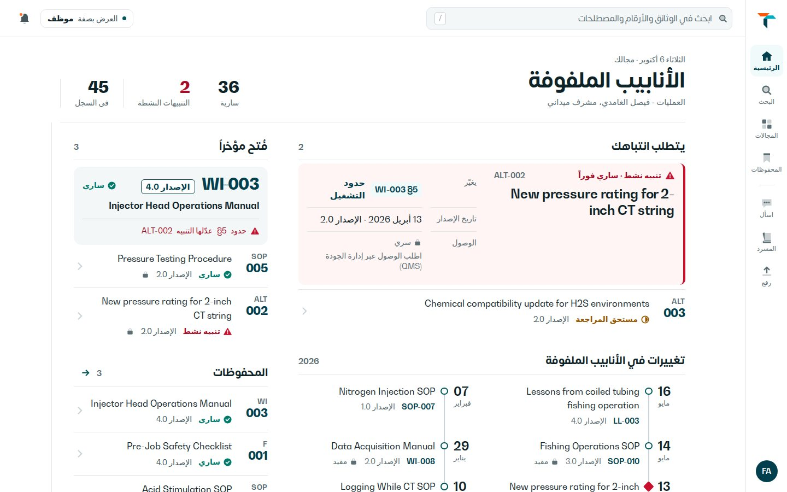

Home · before and after
Mobile · 390 × 844


Desktop · 1440 × 900


Document WI-003 · before and after
Mobile · 390 × 844


Desktop · 1440 × 900


Home in Arabic · Somar, right to left


All four screens with the TAQA rules
What the skill changed
| Rule | After | Before |
|---|---|---|
| Official colours | TAQA Teal Green #00585A for headers, primary actions and the active tab; Legacy Teal #00BFB2 for highlights; Alpine Green family for “Current”. | Teal #005D63 and a generic green |
| Orange at 5% or less | Brave Orange #FF6720 appears only as a notification spark on the bell and avatar. Nothing else is orange. | Orange used for alerts |
| Safety comes first, in Crimson | ALT-002 (it changes WI-003 §5 operating limits) is now a Safety Warning callout: 4px Crimson #C8102E rule on #FFF5F5, at the top of Home and on the document. | An orange-tinted notice box |
| BW Gradual for everything Latin | Headings and body text both use BW Gradual. Inter is kept only as a fallback. | BW Gradual titles, Inter body |
| Filled two-tone icons | Every navigation and action icon is redrawn as a solid shape with a 32% tint for the second tone, so it reads as TAQA, not a generic line set. | Thin outline icons |
| Arabic and RTL | A full Arabic Home in Somar with right-to-left layout: the rail, timeline, safety rule and counters mirror; document codes and revisions stay left-to-right. | English only |
| Correct O&G terms | CT string, WI, SOP, ALT, §5 operating limits kept exactly as in the register; nothing simplified. | Already correct; kept |
What I did not take from the skill, and why
E-learning screen limits. 60–80 words per screen, Next/Back buttons and a progress bar are for training modules. RISE is a document register, so they would get in the way.
Monument Gray for body text. #968C83 on white is about 3.3:1, below the WCAG AA 4.5:1 minimum for text. Body text stays near-black ink; grey is used for dividers only.
Two brand sources disagree. The skill says Teal #00585A and Orange #FF6720; the RISE kit used #005D63 and #FD691D. I followed the skill here. Before anything is built, the values should be checked against the official TAQA Brand Guidelines PDF.
Same real content as round 5 (Faisal Al-Ghamdi, Field Supervisor, Employee, Coiled Tubing). Original N is untouched in round-5/n/. Nothing is implemented in the live RISE application.